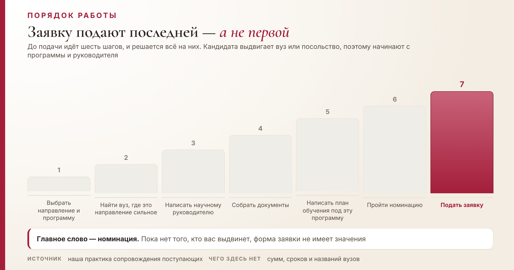
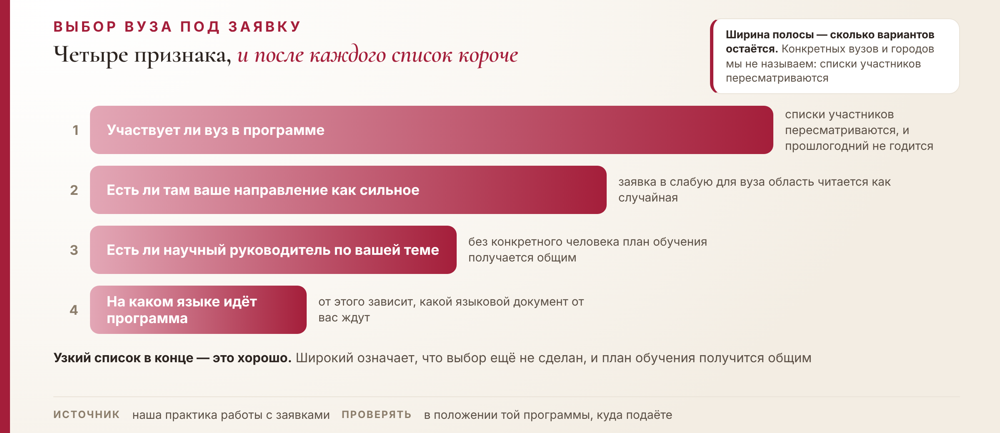

Учёба в Китае
Стипендия CSC: как устроен конкурс и как выбрать вуз под заявку


Главное слово здесь — номинация. Кандидата на стипендию правительства Китая выдвигает вуз или посольство, и только после этого подаётся заявка. Поэтому подача — последний шаг, а не первый, и готовиться к ней начинают задолго.
Разберу три канала подачи, что входит в стипендию, как выбрать вуз под заявку и чем провинциальные гранты отличаются от правительственного. Сколько своих денег всё равно понадобится, разобрано отдельно: бесплатное образование в Китае и что оплачивается самим.
Короткий ответ: это конкурс с номинацией
Стипендию распределяют не по очереди заявок, а по конкурсу, и у этого конкурса есть особенность: вы в нём не самовыдвиженец. Вас должен выдвинуть тот, через кого вы идёте.
Отсюда весь порядок работы. Сначала выбирают направление и программу, потом вуз, потом пишут научному руководителю, потом собирают документы — и только в конце подают заявку.
| Шаг | Что делаем | Почему он раньше подачи |
|---|---|---|
| Первый | Выбрать направление и программу | без этого остальное бессмысленно |
| Второй | Найти вуз, где это направление сильное | и проверить, участвует ли он |
| Третий | Написать научному руководителю | и получить предварительное согласие |
| Четвёртый | Собрать документы | часть из них делается дольше всего |
| Пятый | Написать план обучения под эту программу | ключевой документ заявки |
| Шестой | Пройти номинацию | вуз или посольство выдвигает кандидата |
| Седьмой | Подать заявку | последний шаг, а не первый |
Выделена последняя строка, и это не случайность. Большинство вопросов, с которыми приходят, звучат как «куда нажать на портале», а решается всё на шести ступенях до него.
Что это значит практически. Если до набора осталось немного, самое полезное — не искать форму заявки, а выбрать программу и написать руководителю. Форма никуда не денется.
Дальше — разбор каналов, покрытия, выбора вуза и того, чего в этой статье не будет: сумм, сроков и списков университетов.
Оговорюсь сразу: размеров выплат, месяцев подачи и возрастных ограничений здесь нет. Они пересматриваются от набора к набору, и статья с ними вводила бы в заблуждение уже через год.
Три канала подачи: у каждого своя очередь
Путь к одной и той же стипендии бывает разным, и от канала зависит, кто именно вас выдвигает.
| Канал | Как подаётся | Особенность |
|---|---|---|
| Через посольство | двусторонняя программа между странами | отбор централизованный, у канала своя очередь и свои сроки |
| Через университет | напрямую в приёмную комиссию вуза | вуз сам выдвигает кандидата, и это самый частый путь |
| Через провинцию и отдельные программы | региональные наборы | свои условия и свой список участвующих вузов |
Чаще всего идут через университет. Находят программу, договариваются с руководителем, получают предварительное согласие — и вуз выдвигает кандидата сам.
Канал через посольство устроен иначе: там отбор централизованный, со своими квотами, и вуз подключается позже. Региональные программы живут по своим правилам и спискам.
Выбирать канал стоит не по тому, где «проще», а по тому, где вас реально могут выдвинуть. Если руководитель согласился, разумнее идти через вуз.
Важная мелочь, о которой забывают. Канал влияет не только на сроки, но и на то, с кем вы переписываетесь, когда что-то идёт не так. Это стоит выяснить до подачи, а не после.
Что покрывает стипендия, а что остаётся вам
Полная стипендия закрывает основное, но не всё. Вот из чего она обычно складывается.
| Что именно | Входит? | Комментарий |
|---|---|---|
| Обучение | да | плата за программу не вносится |
| Проживание | обычно да | место в общежитии или доплата на жильё |
| Ежемесячное содержание | да | размер зависит от ступени и года |
| Медицинская страховка | да | базовая, для иностранных студентов |
| Дорога и бытовые расходы | нет | это остаётся на вас |
Сумм в этой таблице нет намеренно. Мы их не публикуем: размер выплат зависит от ступени и пересматривается, а цифра из статьи живёт недолго и успевает обмануть.
Бывают и частичные варианты, где закрыто только обучение или обучение с общежитием. Что именно входит в вашу программу, пишут в её положении — там и смотрите.
Последняя строка таблицы важнее остальных. Дорога, бытовые расходы и первые недели до первой выплаты — это ваши деньги, и их стоит посчитать заранее.
Сколько всего понадобится своих средств даже при полной стипендии, у нас разобрано отдельно, и к расчёту это прикладывается напрямую: сколько своих денег понадобится на учёбу.
Как выбрать вуз под заявку
Это тот самый вопрос, из-за которого заявки чаще всего и не проходят. Вуз выбирают не по известности, а по четырём признакам.

- Участвует ли вуз в программе — списки участников пересматриваются, и прошлогодний не годится.
- Есть ли там ваше направление как сильное — заявка в слабую для вуза область читается как случайная.
- Есть ли научный руководитель по вашей теме — без конкретного человека план обучения получается общим.
- На каком языке идёт программа — от этого зависит, какой языковой документ от вас ждут.
Каждый признак отсекает часть вариантов, и это нормально: в конце должно остаться немного вузов, зато подходящих. Широкий список — признак того, что выбор ещё не сделан.
Названий университетов и городов я не называю, и списков участников тоже. Они пересматриваются от набора к набору, а четыре признака работают в любой год.
Про третий признак скажу отдельно. Руководитель заинтересован в вашей номинации не меньше вашего: он получает студента на свою тему, и это меняет отношение к заявке.
Четвёртый признак меняет подготовку целиком. От языка программы зависит, какой документ о языке от вас ждут и к чему готовиться — к разговору на китайском или на английском.
Как вообще выбирают университет, не привязываясь к стипендии, у нас разобрано отдельно: на что смотреть при выборе университета. Про программы на английском — здесь: китайские вузы с программами на английском.
Ко мне приходят с готовым планом обучения, скачанным из интернета: общие слова про дружбу народов и великую культуру. Такой текст комиссия видела сотни раз и откладывает в первую минуту.
Проблема не в красоте слога. Проблема в том, что по этому тексту нельзя понять ни кто вы, ни почему именно этот вуз, ни чем вы там собираетесь заниматься.
Мы всегда переписываем всё заново. Сначала выбираем конкретную программу и научного руководителя, потом формулируем тему, по которой у этого вуза сильная школа.
Дальше составляем план по годам: что в первый, что во второй, какой результат ожидается. И честно объясняем, зачем вам это нужно после учёбы.
Один мой ученик так превратил общее письмо, каких комиссия видит без счёта, в чёткий план под конкретную кафедру — и получил сначала приглашение на разговор, а потом и место.
Дело было не в удаче. План был конкретным и подходил именно этому вузу, а не любому университету мира.
Отсюда моё первое правило в работе с заявками: пока не выбран вуз и человек, писать нечего. Общий текст можно написать за вечер, и стоить он будет ровно столько же.
И второе: если вы не можете объяснить в двух предложениях, почему именно эта кафедра, значит вуз выбран не до конца, и начинать надо с этого.
План обучения: что он решает
Это главный документ заявки, и по нему вас оценивают как будущего студента. Разница между сильным и слабым планом видна с первого абзаца.
| Сильный план | Слабый, шаблонный |
|---|---|
| конкретная тема и цель обучения | общие слова о развитии и возможностях |
| связь с этим вузом и этим руководителем | подошёл бы любому университету мира |
| план по годам: что и когда | нет ни структуры, ни сроков |
| чем вы полезны программе и что после | рассуждения о величии страны |
| ваш опыт и настоящая причина | фразы, взятые из чужого текста |
Логика простая. Прочитав план, комиссия должна понять: почему именно вы, именно этот вуз и именно эта тема. Универсальный текст проигрывает всегда.
Отдельно про объём. Длинный план не выигрывает у короткого: читают его быстро, и важнее, чтобы с первых строк было видно тему и вуз, чем чтобы текст занимал много страниц.
Частый вопрос: на каком языке писать план. На том, на котором идёт программа. Текст на другом языке читают с усилием, и это заметно сказывается на впечатлении.
Отсюда и порядок работы: сначала вуз и руководитель, потом тема, и только потом текст. В обратную сторону не получается.
Разговор с комиссией: тактика при неидеальном языке
Беседу проводят не везде, но на сильных программах она обычна. И почти всех беспокоит одно: язык пока не идеальный.
Хорошая новость в том, что оценивают не произношение, а осмысленность ответов. Вот что работает на практике.
- Отрепетируйте ответы на главные вопросы — почему эта страна, почему этот вуз, ваша тема и планы после учёбы.
- Говорите просто, но уверенно — короткая ясная фраза лучше сложной с ошибками.
- Знайте свой план наизусть — вопросы идут прямо из него, и путаться в собственном тексте нельзя.
- Не притворяйтесь — не поняли вопрос, вежливо переспросите: это считывается лучше заученного монолога.
- Подтяните язык под задачу — хватит уверенного разговора о вашей специальности, а не обо всём на свете.
Разговор длится недолго и держится на нескольких вопросах, поэтому готовиться к нему проще, чем кажется: это не экзамен по языку, а проверка того, понимаете ли вы, зачем едете.
И ещё одно, что помогает больше любой тактики: знать, о чём вы собираетесь говорить по существу. Разговор о собственной теме идёт гораздо легче, чем разговор на общие темы, даже при скромном языке.
Какой уровень языка вообще требуют и что стоит за каждой ступенью, разобрано отдельно: что требует каждая ступень языка.
Провинциальные и университетские: чем отличаются
Правительственная программа — не единственная. Деньги на учёбу дают на трёх уровнях, и конкуренция на них разная.
| Уровень | Кто даёт | Особенность |
|---|---|---|
| Правительственный | общенациональная программа | самый известный и самый конкурсный уровень |
| Провинциальный | программы отдельных регионов | меньше известности, другой круг участников |
| Университетский | собственные стипендии вузов | условия вуз устанавливает сам и меняет чаще всего |
Разница между уровнями не в качестве учёбы: вуз один и тот же, программа одна и та же. Отличается источник денег и, как следствие, круг тех, с кем вы соревнуетесь за место.
Практический вывод отсюда один. Смотреть стоит все три уровня сразу: на менее известных программах конкурс спокойнее, а учёба от этого не становится хуже.
Университетские вспоминают реже других, а зря: иногда именно они закрывают разницу между «не хватило совсем немного» и «поехал учиться».
Подавать на несколько уровней одновременно обычно можно, но правила совмещения у каждой программы свои — это тот вопрос, который уточняют до подачи.
Как устроена стипендия правительства именно для россиян, разобрано у нас отдельно: стипендия правительства КНР для россиян.
Частые ошибки и чего в статье нет
- Начинать с портала заявок — это последний шаг, а до него шесть других.
- Один план обучения на все вузы — номинирует конкретный вуз, и ему нужен текст про него.
- Не написать руководителю — без заинтересованного человека заявка выглядит случайной.
- Тянуть до объявления сроков — часть документов делается долго, и к объявлению их уже надо иметь.
- Верить спискам вузов из прошлых наборов — состав участников пересматривают.
Первая ошибка встречается чаще всех и выглядит деятельной: человек заводит анкету, заполняет поля и чувствует, что дело движется. На самом деле движение начинается с письма руководителю.
И список того, чего в статье нет намеренно: размеров выплат, месяцев подачи, возрастных ограничений, названий университетов и городов. Всё это меняется от набора к набору, а проверять нужно в положении той программы, куда вы подаёте.
Отдельно про гарантии. Их не даёт никто, и это не оговорка для порядка: распределение мест зависит от конкурса в вашем наборе, а не только от качества заявки.
Частые вопросы (FAQ)
Как получить стипендию CSC?
Короткий ответ: пройти номинацию. Кандидата выдвигает та сторона, через которую вы идёте, — вуз или посольство, — и только после этого подаётся заявка. Поэтому работа начинается не с портала, а с выбора программы и научного руководителя, который готов вас принять.
Как выбрать вуз, чтобы повысить шансы?
По четырём признакам: участвует ли вуз в программе в этом наборе, сильное ли у него ваше направление, есть ли руководитель по вашей теме и на каком языке идёт программа. Заявка в слабую для вуза область читается как случайная, даже если всё остальное в порядке.
Сколько платят по стипендии?
Сумм мы не публикуем, и в этой статье их нет. Размер зависит от ступени обучения и пересматривается, поэтому любая цифра в статье быстро перестаёт быть верной. Актуальный состав выплат смотрите в положении той программы, куда подаёте.
Чем провинциальный грант отличается от правительственного?
Уровнем того, кто даёт деньги, и кругом участников. Правительственный — общенациональная программа и самый конкурсный уровень. Провинциальные известны меньше, и вузов в них участвует другой набор. Есть ещё собственные стипендии университетов, условия которых вуз меняет чаще всего.
Когда подавать документы?
Конкретных месяцев я не называю: сроки различаются по каналам, вузам и наборам, и прошлогодние даты вводят в заблуждение. Ориентироваться нужно на объявление того вуза или канала, через который идёте, а начинать подготовку — сильно раньше срока: часть документов делается долго.
В какие университеты конкретного города можно подать?
Названий вузов и городов мы не публикуем, и списков участников тоже: они пересматриваются от набора к набору. Вместо списка в статье четыре признака, по которым вуз проверяют самостоятельно — это надёжнее любого перечня.
Ещё один вопрос, который задают почти всегда: сколько заявок подавать. Несколько — разумно, но каждая должна быть своей: один и тот же текст, разосланный в пять мест, обычно не проходит ни в одном.
И про помощь со стороны. Посредники обещают провести по всем шагам, но ни один из них не может ни выбрать за вас тему, ни договориться с руководителем вместо вас — а именно на этом всё и держится.
И напоследок то, что важнее всех шагов выше. Заявка на стипендию выигрывает не объёмом усилий, а точностью: один вуз, один руководитель, одна внятная тема. Если хотите разобрать свой случай и понять, с чего начинать, приходите на бесплатный урок: посмотрим вашу задачу и наметим порядок.
Источники
- Устройство каналов подачи и порядок номинации — наша практика сопровождения поступающих и прежняя версия этой статьи.
- Четыре признака выбора вуза и разбор плана обучения — наша практика, а не чьи-то опубликованные рекомендации.
- Размеров выплат не привожу: сумм мы не публикуем, и они пересматриваются.
- Сроков подачи и возрастных ограничений не привожу: они различаются по каналам, вузам и наборам.
- Названий университетов и городов не называю и списков участников не публикую: их состав меняется.
- Случай с учеником взят из занятий Kitai School; имени и названия вуза не привожу.